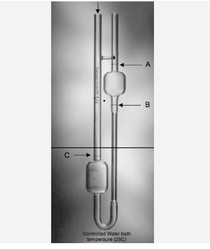

Chemistry Lab Experiments
Interactive learning platform for chemistry students
Experiment 4 :Determination Of Viscosity of given unknown liquid wrt water
Aim: To determine the viscosity of a given unknown liquid with respect to water, at laboratory temperature, using Oswald viscometer.
Step 1: Collect All the materials requires for the experiment.

Audio explanation:
APPARATUS : Ostwald viscometer, rubber tube with screw pinch cock, rubber bulb. stand, beaker, experimental liquids, distilled water, specific gravity bottle.
Step 2: Prepare the viscometer for the experiment.
Audio explanation:
Clean the viscometer with chromic acid and then wash thoroughly with distilled water. It and finally washed with acetone and dried.
A specific amount (say 10ml) of distilled water (every time take the same volume) is introduced by pipette in bulb B so that the bent portion of tube and half or a little more than a half of bulb B is filled up. Clamp the viscometer in quite vertical position.
Step 3: Calculate the time of flow of water
Audio explanation:
Through the rubber tube attached to the upper arm of bulb A, suck up water until it rises above the upper mark C and allow it to flow under its own weight
The time of flow of water from C to D is noted by starting the stop watch as the Meniscus Just reaches upper mark. Cand stopping the watch as the meniscus just passes the lower mark D.
Step 4: Taking readings
Audio explanation:
Take at least three reading for water. Also take the similar readings for the given liquid samples.
Wash the specific gravity bottle with distilled water and dry.
Step 5: Calculation of viscosity.
Audio explanation:
Take the weight of the empty and filled (with distilled water) specific gravity bottle (along with the stopper). Then, weigh the specific gravity bottle filled with given unknown. liquids. Use the data for measuring the densities.
------
Determination of the density of the liquid (di):
Density of water (d_{n}) = 1g / ml at 25 deg C
Density of the liquid 1 (Glycera)= (W3-W₁)/(W2-W₁)*d 46.54 52-64
-----
Determination of the viscosity of the liquid(1)
Viscosity of water ( η{w}) = 0.89cp
Viscosity of the liquid 1 = (d1 t1)/(dw tw) * w
Quiz: Test Your Understanding
1. What is the formula used to calculate relative viscosity using an Ostwald viscometer?
2.What should be constant during the experiment for accurate results?
3. What is the unit of viscosity in SI?
4.What is the viscosity of water?
Quiz Results
You scored 0 out of 4 (0%)